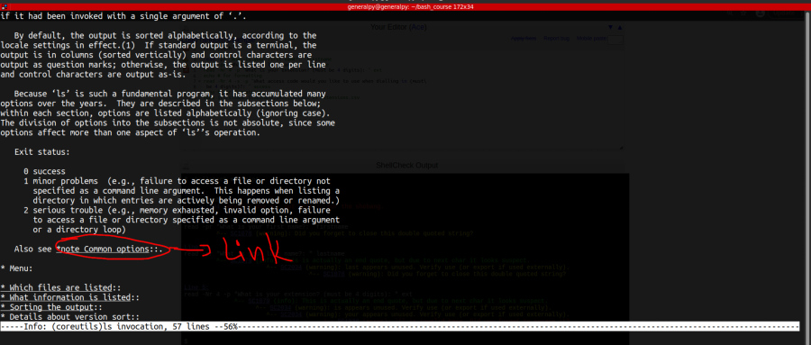

There are 2 types of commands in bash, shell builtin commands and external commands.
Shell builtin commands are shipped with the shell and external commands are extra utilities which either we install or are provided by the system.
To see what is a command type, use type command.
help is a builtin command which is used to get help on builtin commands.
Use -s with help to get a short user synopsis of the command and -d to get a short description of the command.
man command which is short for manual is used to get help for external command.
Use -k with man to get a search a keyword is short description of a command and -K to do an indepth search, search in full description.
info command is also used to get help for external commands. info provides more information than man and also contains links in it for easy navigation.
